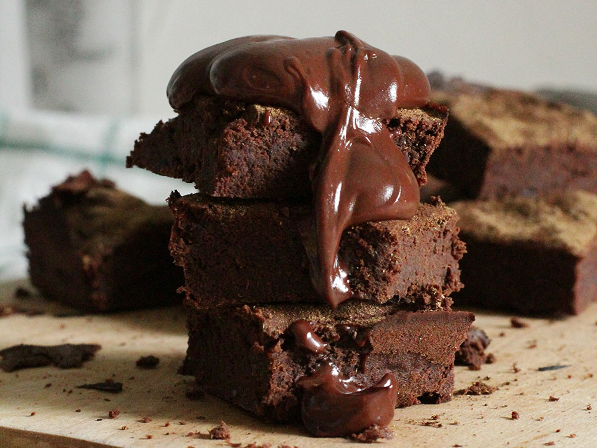

Chocolate cake

Description
A chocolate cake made with cocoa and coffee. You will love it!
This recipe makes 24 servings.
Ingredients
- 2 cups all-purpose flour
- 2 cups white sugar
- 3/4 cup unsweetened cocoa powder
- 2 teaspoons baking soda
- 1 teaspoon baking powder
- 1/2 cup vegetable oil
- 1 cup milk
- 2 eggs
- 1 teaspoon vanilla extract
- 1 cup hot, strong coffee
Steps
- Preheat the oven to 175 degrees C.
Grease and flour a 9x13-inch baking pan.
- In a large bowl, stir together flour, sugar,
cocoa, baking powder, and baking soda.
Add oil, milk, eggs, and vanilla; mix until smooth.
Stir in hot coffee last. Spread evenly into the prepared pan.
- Bake in the preheated oven for 25 to 35 minutes, or until
a toothpick inserted into the cake comes out clean.
Go back